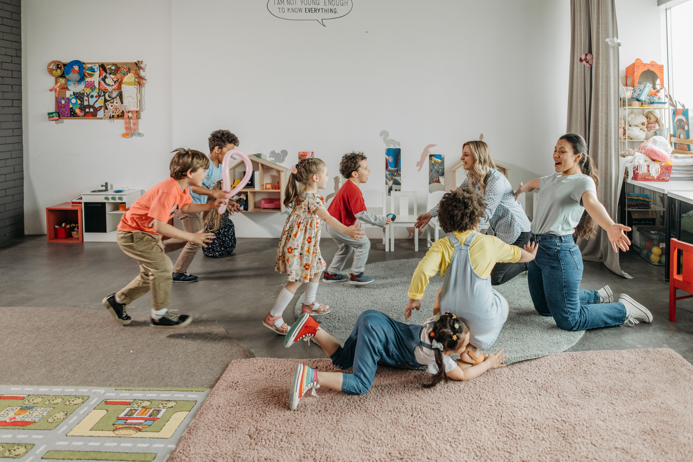

Protect children's health
Help prevent the spread of illnesses and infections.

Hello and Welcome to my Website. Myself Ansh and I am an ECE student at Humber College. This Website has been created to provide information regarding safety practices followed at licenesed childcare environments which will help families to learn about how educators respond to illness, prevent the spread of infections, and create safe space for children to play and learn.
Help prevent the spread of illnesses and infections.
Reduce hazards and create safer indoor and outdoor spaces.
Help children feel comfortable, secure, and cared for.
Allow children to explore, participate in activities, and develop new skills.
Illness policies are rules and procedures that are followed by Childcare centre to help protect children, families and educators from the spread of infections.
These policies help educators to better understand the signs of illness in children and to respond accordingly.
Three important considerations when managing illness in childcare are: Symptoms of illness, Exclusion from Childcare, Reporting Requirements.
These policies are important as it help protect and keep children safe.
Immunization records contain the information regarding the vaccinations that child has received.
In Ontario, it is manadatory for Childcare centres to ensure that children are immunized as per the directions of local Ministry before admission and afterwards.
There are some exceptions for certain religious and medical reasons (Ontario, 2015, s.35).
These records are important because they helps educators to understand the Immunization of individual child and provide the respond accordingly when communicable disease occurs.
In classrooms, educators can follow this requirement by keeping the immunization records in the individual files of children and asking families to provide updates when needed.
Official Source: Ontario Regulation 137/15 - Section 35
Medication administration policy states about procedures to provide medications to the children while they are attending a child care centre.
Ontario Regulation 137/15 requires centres that agree ti administer medication to have written procedures and keep records of medication administration.
Medications should be stored as per the labels, kept out of the reach of children.
This policy helps prevent medication mistakes and protects children from accidental access.
In the class educators must follow the written instructions, including the child's name and the amount of dosage and time provided by the parents along with the authorisation.
Official Source: Ontario Regulation 137/15 - Section 40
Communicable disease and outbreak reporting process help explain how a child care centre should respond incase of reportable disease.
Toronto Public Health requires child care centre operators to report outbreaks and reportable diseases to the Communicable Disease Notification unit.
Centres must keep the written instructions on how and when to report the disease along with the process to be completed(City of Toronto, n.d.).
This reporting is important becuase it helps Public health officials to provide the process and help limit the spread of infections.
In the classrooms, educators must inform their supervisors about the possible symptoms.
Official Source: City of Toronto - Policie and Procedures for Child Care Centres
A safe environment is one that is designed in such a way where children can play, learn and grow in the supervised environment without worrying about the risks.
This includes clean and properly maintained indoor and outdoor environments, safe materials such as toys, and active supervision.
Safety does not imply to stop children from taking risks becuase it is an integral part to learning and growing.
Educators must identify possible hazards, supervise children, and provide opportunities for exploration.
Ontario requires children in licenesed child care to be supervised by an adult all the time (Ontario, 2015, s. 11).
Official Source: Ontario Regulation 137/15 - Section 11
Active supervision means that educators are actively observing and monitoring the children to help prevent any accidents and can respond quickly accordingly.
Ontario Regulation 137/15 requires every child in a licenesed child care centre to be supervised by an adult all the times, both inside and outside the centre (Ontario, 2015, s. 11).
This requirement is very essential because at early age, children can identify the risks themselves while they tends to learn and grow.
In the class, educators can place themselves at the location where they can properly oversee and hear all the children and this also applies to the outside play area.
Official Source: Ontario Regulation 137/15 - Section 11
Playground safety Inspections help to make sure that outdoor play areas designed for children and equipment are safe to use.
Ontario Regulation 137/15 requires child care centres to have a playground safety policy and conduct daily, monthly, and annual inspections of outdoor play areas, fix structers if needed and the open surfaces.
These inspections help eliminate the risk of injury by controlling the hazards such as broken equipment, exposed sharp objects or surfaces.
In the classroom, educators follow inspection checklists and report problems to the supervisor. The area remains inaccessible until fixed properly.
Official Source: Ontario Regulation 137/15 - Section 24
Fire Safety and Emergency procedures are the set of instructions that help educators and children to respond in the case of emergency such as fires or evacuations.
Ontario's fire code requires child care centres to have fire safety procedures and to conduct regular fire drills.
These procedures include sounding the fire alarm, contacting fire department and evacuating occupants(Ontario, 2007, ss. 2.8.2-2.8.3).
These practices are important young children are depend on the educators for guidance during emergency.
In classroom, educators practise evacuation drills, follow exit routes, and make sure all children are accounted for at meeting location.
Official Source: Ontario Regulation 213/07 - Fire Code
As a future Early Childhood Educator, I understand that children's health and safety remains the top priority. Following illness prevention practices, maintaining a safe place, and be prepared for emergencies help protect children and their families. Educators have professional responsibility to create healthy, safe and welcoming environment for children to learn, play and grow.